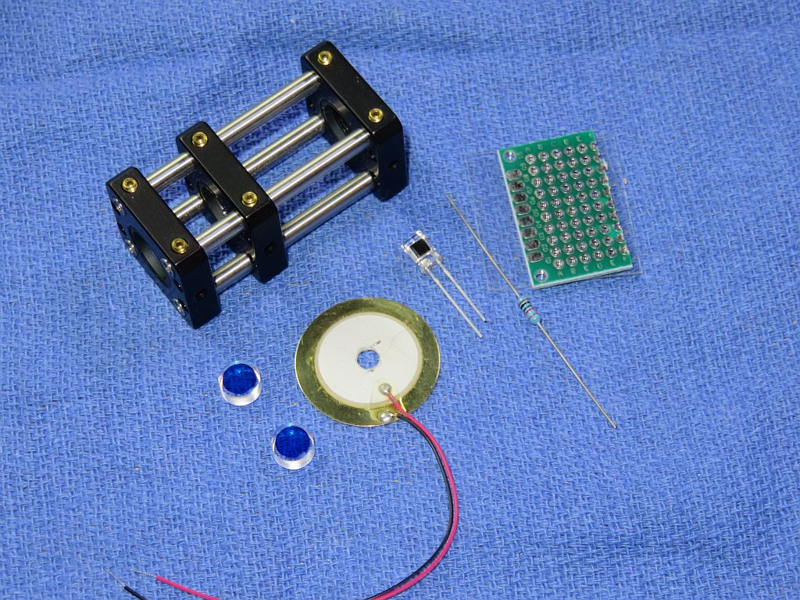
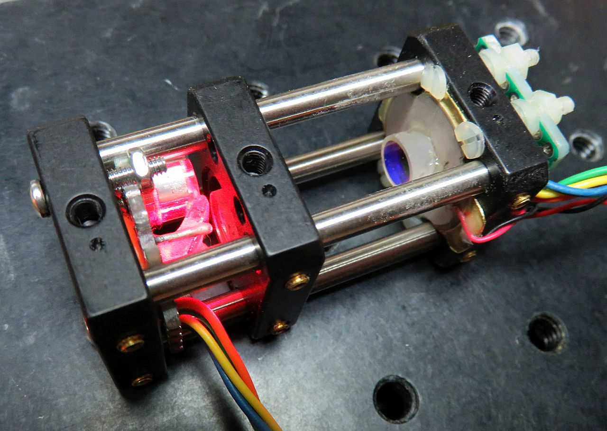
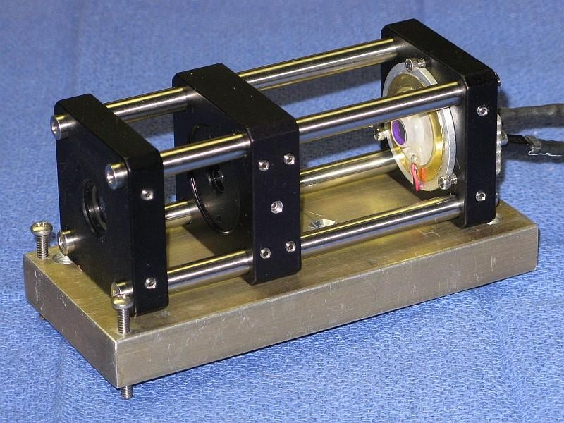
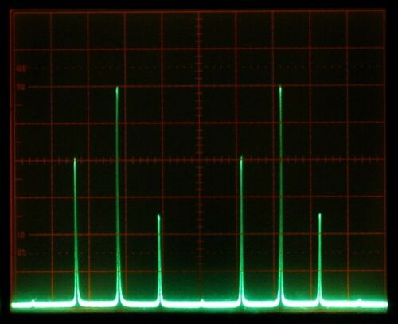
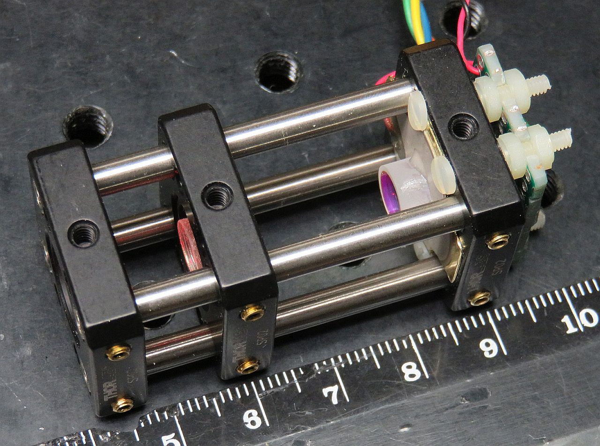
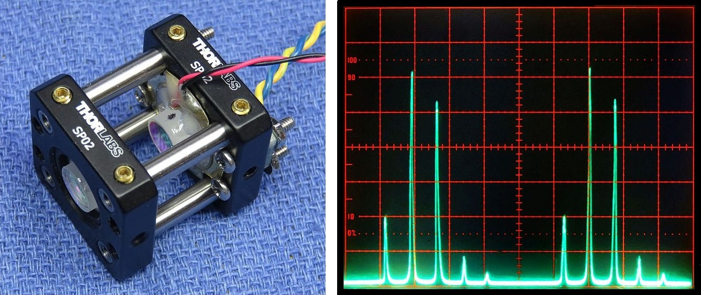

Copyright © 1994-2026
Sam Goldwasser
--- All Rights Reserved ---
Performance is best with narrow beam lasers like HeNes but the use of an aperture beam reduction optic should allow the modes of fat beam lasers to be displayed as well. The advantage of a confocal SFPI is that alignment with respect to the laser being tested is much less critical than with a planar-planar SFPI and back-reflections can be off-axis so that the laser is less likely to be destabilized.
The benefit of the Deluxe kit is that in addition to what's in the basic kit, it includes parts from Thorlabs for the major mechanical assembly so that much of the scavanging for scrap sheet metal and other tid-bits is eliminated. The Thorlabs "Cage System" provides a rigid frame allowing for initial adjustment which can then be locked in place. The completed frame and other parts are shown below.
This manual provides details specific to the Deluxe versions using Thorlabs 16 mm cage parts to implement more compact SFPI heads.
The general optical layout for a spherical cavity SFPI is shown below:
The original kit using the full size frame is:
The Deluxe Short, Mini, Micro, and Nano SFPIs use Thorlabs 16 mm cage parts and a 20 mm diameter PZT resulting in a frame that is around 1x1 inch (25.4 x 25.4 mm) in cross-section and differ mostly in length. These are more compact but use the same mirrors as the one above. There will be tradeoffs: For the most common mirror spacings, a shorter cavity length results in lower finesse and larger FSR. The physical characteristics of these are summarized below:
The frame for the Deluxe Mini, mirrors, PZT, and photodiode, along with a completed head using these parts is shown below. The head includes a dual polarization detector for the SFPI at the rear as well as a beam sampler and dual polarization mode detector between the focusing lens and front mirror for mLMA1. (See: Mini Laser Mode Analyzer (mLMA1).


In addition to the cage frames, the kits include:
CAUTION: The mirror coating on the highly curved surface is extremely delicate. DO NOT TOUCH with ANYTHING. The mirrors should be clean, requiring at most to have dust blown off with a air bulb. If cleaning is needed, ONLY use laser mirror cleaning techniques! The warranty does not cover damage to mirror surface! I suggest NOT removing the mirrors from the lens tissue until ready to install. They are just mirrors! You can purchase similar mirrors separately for use as decorative aquarium stones, but those tropical fish had better be really special. :-)
There are many ways to provide this drive:
The photos above show a 27 mm diameter PZT. The PZT currently included in the kits is 20 mm in diameter with a 3-5 mm diameter hole. The required drive voltage would normally be higher since it is smaller, but because the SPFIs using a higher N value require less voltage to move 1 FSR, the sensitivit is actually higher. The PZT may require careful trimming to fit within the cage rods.
The attachment of the leads to the PZT disk is rather fragile, especially the one soldered to the metallic coated area which is only loosely bonded to the PZT material itself. So it would be a good idea to coat the immediate area with a tiny amount of 5 minute Epoxy to minimize stress, and then to add a strain relief when installed in the SFPI assembly. Just don't allow adhesive it to flow toward the center as that will interfere with the placement of the mirror due to limited space.
The PD can be connected via shielded cable or twisted pair directly to the vertical input of your scope with a 10K ohm load resistor. However, it is better to connect the PD in series with the load resistor and back-bias it with a few volts (e.g., a 9 V battery). With back bias, the response (across the load resistor) will be linear up to several mW. Something along the lines of:
Shielded Cable
R Protect PD1 Center
+-----/\/\-------|<|-----------------------+----o Scope input (direct)
| 1K ohms +--------------+ |
| (Optional) | Shield | /
| | | \ R Load
| | | / 10K ohms
| | | \
| +| | - | | |
+------||||-------------+ +---+----o Scope Gnd
B1 | |
Confirm that the PD is responding to light. Room light will suffice, but a better test source is a dimmable LED flashlight. These use Pulse Width Modulation (PWM) to chop the light output and a pulsed waveform should be clearly visible on the scope. For lasers with a beam power significantly below 1 mW, a preamp may be required.
There are also "Deluxe+" versions of some of these which substitute an adjustable kinematic mount for the rear cage plate. However, for short SFPIs like these, an adjustable mount is serious overkill and about doubles the cost with little benefit. But if you're anal about having everything be tweakable, go for it. Or even request a quote for one with two adjustable mounts! ;-)
Cut a piece of Perf. board to around 0.5x1.0 inch and drill holes in it to match those in the cage plate. They are spaced 0.32 x 0.81 inch but using the existing holes on a 0.3 x 0.8 inches apart should be close enough. A drill press is best for drilling any required holes but it can be done with hand drill, then "adjusted" using needle files if necessary. Where a PCB is included, some slight adjustment of the mounting holes may be required, sorry. ;-)
There are two types of detectors. In most instances the simpler "single polarization" detector will be used. Both of these now include a small PCB with sockets for the photodiodes.
The PBS cube should be oriented so that the diagonal directs the reflected (S) polarization to a PD next to it and the tiny dot on the PBSC is on the input side. The other PD should hang over the PBS for the pass-through (P) polarization
The polarization axes of your laser will then need to be aligned with the SFPI "head".
It is best to use the sockets for the PDs so that the leads do not need to be soldered. The plastic easily melts and then the internal bonding wires can break. The PCB is designed for up to 2 PCs to be back-biased by a common positive power supply (typically 5-12 VDC). The longer lead is the anode and with the red probe of most DMMs, it should show a voltage drop like a normal diode: 0.5-0.7 V.
The photos below show two types of dual polarization detector assemblies using Perf. Board (not the PCB).. The one on the left is typical of what is described above and would be installed behind the rear mirror for the SFPI including mounting holes for attaching to the rear cage plate. The beam comes in from the top (in the photo) and is split between the PD sitting beside the PBS cube and the one beneath it. Since the stack of the PD and PBS cube is thicker than a PD alone, spacers will need to be placed between the Perf. board and cage plate.
The one on the right would be used for the mode display of mLMA1, so its input is at right angles to what is required for the SFPI. A non-polarizing beam sampler is required to direct a portion of the beam into the PBS cube. Note that a simple glass plate is not very good for this if aligned with one of the principle axes as would be typical because it is highly anisotropic with respect to polarization - typically 4:1. If oriented at 45 degrees to the principle axes along with the PBS, this issue would be eliminated.


In both cases, the PBS cube can be attached to the the PDs with high quality clear Epoxy or UV-cure optical cement on its faces, or using tiny drops of 5 minute Epoxy on its edges. DO NOT use SuperGlue™ (Cyanoacrylate)!!!
Use a needle file to trim the PZT in 4 spots so it will clear the cage rods with a small gap. Make sure the alignment is such that the wires exit to one side. The PZT can be secured using the M2, M2.5, or 2-56 screws through the holes in the SP02. If any trimming is needed so the screws fit, remove as little metal as needed so that the heads of screw heads will hold it securely to the SP02 and Perf. board. Take care not to stress the PZT or tear off a wire while filing as reattaching wires is difficult, particularly to the center area which has a coating that tends to disappear when a soldering iron comes anywhere near it. :(
Also, if desired, cut and trim a piece of the plastic insulating sheet and drill 4 clearance holes in it for the 4 screws and a larger center hole for the beam to pass through. The plastic insulator is only needed to isolate the ramp drive from the frame. In most cases, this won't make any difference (inclusing with mLMA1) and can be left off.
Carefully remove the mirror from its protective lens tissue. While holding it in position with the flat side of a toothpick across the top or (less desirable) a clean cotton swab, apply the tiniest amount 5 minute Epoxy in 3 locations around its perimeter. Just enough to secure it. Once the Epoxy sets up, additional adhesive can be added to increase the strength, but there really isn't much stress on this thing and too much adhesive may restrict the motion of the PZT.
The 42 mm RoC mirror substrates are ground with significant "wedge" - the front and back are not parallel. Small wedge is often built into mirrors like this to avoid reflections from the non-mirror surface re-entering the laser, but the amount of wedge here is large enough that the mirror itself would be set at a steep enough angle to matter. So correcting for it is desireable, especially if an adjustable mount is not used for the PZT/rear mirror. Therefore, it should be attached to the PZT at a slight angle to compensate. (This can be avoided by attaching the mirror to the back of the PZT but I prefer the other way since being recessed, it would be almost impossible to clean if that should ever be required.) That also interferes with the placement of the PD.
Carefully remove the mirror from its protective lens tissue. Locate the thinnest part and put a mark on the side with a pencil. The correct angle can usually be obtained by placing a tiny piece of standard Avery sticky label under it on the thin side. :) (Very scientific, huh?) A 1x5 mm piece of label will suffice.
Center the mirror on the PZT disk taking care to orient it so the mark you added lines up with the bump. While holding it in position with the flat side of a toothpick across the top or (less desirable) a clean cotton swab, apply the tiniest amount 5 minute Epoxy in 3 locations around its perimeter. Just enough to secure it. Once the Epoxy sets up, additional adhesive can be added to increase the strength, but there really isn't much stress on this thing and too much adhesive may restrict the motion of the PZT.
Secure this assembly to the rear cage plate along with insulator if used and the PCB using the M2, M2.5, or 2-56 screws and nuts. Adjust the position so that the active area of the photodiode is centered. Note: The holes of the PCB may need to be "adjusted" to be able to secure the PCB to the cage rods.
The photo below shows the (full size) Deluxe SFPI. Mounting schemes for the smaller ones can be similar. While installing any of them on a fancy kinematic mount is possible and may be desirable for later use, alignment of all of these does not need to be very precise so rudimentary mounting is actually quite satisfactory. The main problem is that due to their low weight, they tend to be shift position just from the stiffness of the wires. :( :)


However, for all but the Mini-SFPI, the frame is too short to use the confocal spacing. But there are many other discrete mirror spacings for spherical SFPIs that are also mode-degenerate. Several shorter ones are listed in the table below:

As can be seen, as the value of n increases, the mirror spacing decreases, the FSR increases and the finesses decreases. Thus, where resolution is important, keeping n low subject to the maximum available space will be desirable.
Two that are of interest are for these shorter SFPIs are:
But note that even though the Planar and Spherical spacings look like they should be excellent, achieving decent performance may be extremely challenging. The Spherical spacing requires precise mode matching of the input to have a decent finesse and is too long anyhow. The spacing for Planar mirrors only affects the FSR, but alignment is super-critical and when perfectly aligned, almost the entire power of the laser beam gets reflected directly back into the laser aperture, which may destabilize it and can even damage some lasers. Thus, N needs to be 2 or higher.
There is much more info in "Sam's Laser FAQ" starting with Mode Degenerate Fabry-Perot Interferometers.
Of the four Deluxe SFPIs discussed here, only the "Short" one can use the confocal spacing with barely enough space for the optional focusing lens. The others will require mirror spacings using higher values of n that are smaller. (There are also longer spacings that may be useful, but not here.)
Coarse spacing adjustment can be done by sliding the cage plate on which the front mirror is mounted on the rods close to the calculated location and locking it in position. Fine tuning will then be done "live" as described below.

The Perf. board behind the rear cage plate is spaced to allow room for the dual polarization detector installed here. Also if you're paying close attention, the PZT is the larger 27 mm type, not the 20 mm one now supplied with the kits. So much more trimming was required.

The mode display was made by this SFPI with a Wavetek function generator and Tektronix analog scope and is of the same laser as for the confocal SFPI. While the resolution isn't as high (the peaks are wider), it is still more than adequate to display the modes of any size HeNe laser.
The axes and orientation of the mirrors should be coincident. Slight tilt with respect to each other isn't critical - it just shifts the center point of the spherical cavity. However, an offset may be more detrimental. Thus care in assembly with respect to where the mirror mounted on the PZT and where the PZT is mounted are important. But you knew that. ;-)
Once the assembly is complete, it's time to do "first light" with a laser! A single longitudinal mode (single frequency) laser is best for this as it reduces any ambiguity in setting the cavity spacing, but a short normal HeNe (e.g., a JDSU 1508) red alignment laser can be used. A DIODE LASER WILL PROBABLY NOT WORK as most are not even close to single mode.
More likely, the peaks will be smeared out or composed of multiple small blips as in the sequence of graphics below for a single mode laser. Or there may be nothing. Adjust the spacing of the mirrors in small increments Slowly and then let it settle down. With any movement, the display will become quite scrambled, so be patient. If going one way makes it worse, go the other way. :) If the initial cavity spacing was within about 1 mm of being optimal, there should be only one place close by where it resolves into a beautiful display like those above. ;-)

These simulated "screen shots" depict the display of the modes of a single mode laser spanning 2 FSRs for an SFPI using 42 mm RoC mirrors with 99.5%R as the cavity length approaches optimum. From left-to-right, top-to-bottom, the error is approximately: 0.3 mm, 0.15 mm, 0.07 mm, 0.03 mm, 0.015 mm, 0 mm.
The entire sequence represents a cavity length change of <1 percent but will also depend on the finesse and the mode order n (confocal, half confocal, etc.). The higher the finesse, the more critical it will be. In other words you mileage may vary. :) The amplitude of the peaks would actually increase by a much larger amount than shown. Which side the "crud" is on depends on the relationship of the ramp voltage to cavity length, swap if backwards. :) Some of these diagrams are originallly from the Toptica SFPI 100 manual, I hope they won't mind. :)
All other factors being equal, shorter length cavities would be more sensitive to spacing error. However, since for these mode-degenerate SFPIs, the finesse also decreases with higher values of n, the change won't be that dramatic.
If there is no evidence of any response related to the laser, confirm that the PZT is actually being driven - set the function generator to a few kHz and listen to the PZT! There should be a very audible tone. Check the output of your function generator and connections if there is none. And check that the photodiode responds to light by shining a flashlight into the rear mirror.
Once it's near optimal using the sliding adjustment, tighten the set screws to secure the cage plate. Then fine tune further by rotating the SM1AD8 adapter. A simple tool for this can be made by repurposing a giant GEM paper clip bending it so its ends slip into the holes in the SM1AD8. Rotate the SM1AD8 while pressing it *away* from the locking ring so it's outside threads are against the cage plate's inside threads. Keep in mind that since it's likely the mirror isn't perfectly centered, the alignment will also change slightly as the SM1AD8 adapter is rotated, so also peak alignment as you are doing this. Then tighten the locking ring to secure it. This may require 3 or 4 hands.
Another method for making changes in mirror spacing once it's close to optimal is to loosen two of the set screws on one side securing the cage plate with the LMRA8, then push it forward or back, and retighten them. There is enough free-play that this will result in a small movement. Peak the alignment and if the appearance improves, then do it again. Or try the opposite direction if it gets worse.
If you have a kit with an adjustable mount at the back end, that can be used to do the fine adjustment using its three screws as it can translate a few mm back and forth. But what fun is that?
First time users do not appreciate how precise the spacing needs to be. But it's less than 1/10th the width of a human hair - a few microns for the confocal spacing with the 42 mm RoC mirrors. Sliding the mount back and forth will not work unless you're good at picking lottery numbers. ;-).
Once you become proficient at spacing adjustment, it's interesting to try various mode-degenerate spacings to see how they compare in terms of resolution, FSR and sensitivity to PZT drive voltage.
It's also essential to avoid back-reflections into the laser, which will likely destabilize it and create chaos in the display. The alignment should be adjusted such the the reflections from the SFPI (mostly the front mirror) do NOT enter the laser's aperture. With the confocal cavity SFPI, a slight offset will not significantly affect resolution. Ideally, an optical isolator could be used but they are pricey.
Using mirrors identical to the ones in the kit, I've seen a finesse at 633 nm of 500 or more, though this depends on all the stars aligning perfectly. :) With no angular adjustment, the centerlines of the two mirrors should also be as coincident as practical to really peak the finesse. This requires either super-careful installation of the glued mirror, or fine adjustment of the position of the PZT assembly on the cage plate. In addition, down to a point, narrower beam (e.g, <1 mm) generally results in higher finesse and a lens may help. A wide beam can be put through an aperture (though the signal will be reduced.) Expect a finesse of several hundred at 633 nm with reasonable care. Performance at other wavelengths may not be as good but it should still be usable to slightly below 594 nm (yellow HeNe) and up to 680 or 700 nm. It might even be better at some longer wavelengths around 650 nm. However, down at 544 nm (green HeNe) or 532 nm DPSS it will at best display broad lumps and probably not even that.